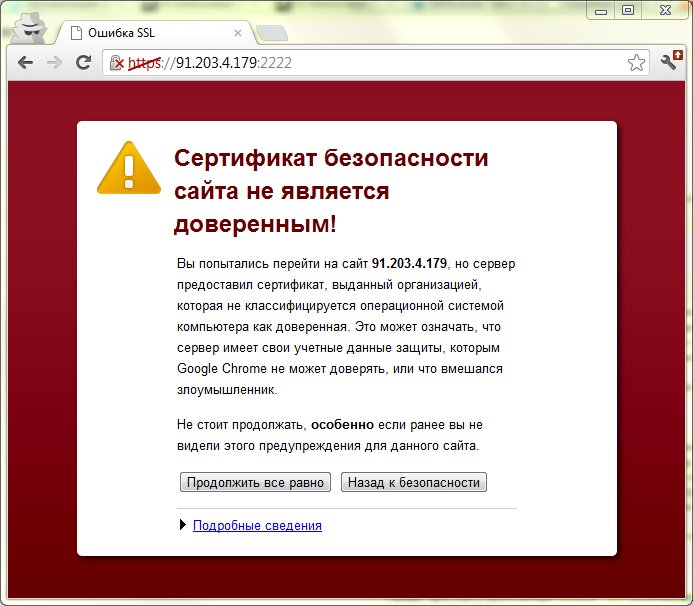

7. SSL сертификат: содержание, формирование запроса, проверка данных с помощью сервисов
Цифровые SSL сертификаты. Разновидности, как выбрать?
Существует достаточно много цифровых сертификатов, каждый из которых служит для своих целей. Самые распространенный тип сертификатов это естественно SSL сертификаты, которые также имеют несколько подвидов. Также существуют Code Signing сертификаты, Website Anti Malware Scanner сертификаты и Unified Communications сертификаты.
Поскольку мы занимаемся продажей всех видов сертификатов, то накопилось некоторое количество опыта по сертификатам и знаний как правильно подобрать нужный сертификат для конкретной ситуации. Постараюсь в нескольких постах поделиться этой информацией.
Так что если у вас стоит задача поднять защищенное https соединение для вашего сайта, то в этом посте я постараюсь раскрыть все тонкости и особенности SSL сертификатов, чтобы сделать правильный выбор было проще.
Начнем с самых распространенных SSL сертификатов.
SSL сертификаты самый распространенный на данный момент тип сертификатов в Интернет. Чаще всего они используются в интернет-магазинах, то есть на сайтах, где есть функция заказа и где клиент вводит свои персональные данные. Для того, чтобы эти данные в момент передачи из браузера на сервер невозможно было перехватить используется специальный протокол HTTPS, который шифрует все передаваемые данные.
Для того, чтобы активировать возможность работы протокола HTTPS как раз и нужны цифровые SSL сертификаты (также потребуется выделенный IP для конкретного сайта).
Что такое SSL сертификат?
SSL — это сокращение от Secure Socket Layer — это стандартная интернет технология безопасности, которая используется, чтобы обеспечить зашифрованное соединение между веб-сервером (сайтом) и браузером. SSL сертификат позволяет нам использовать https протокол. Это безопасное соединение, которое гарантирует, что информация которая передается от вашего браузера на сервер остается приватной; то есть защищенной от хакеров или любого, кто хочет украсть информацию. Один из самых распространенных примеров использования SSL — это защита клиента во время онлайн транзакции (покупки товара, оплаты).
Как получить SSL сертификат?
Самый простой и бесплатный способ — это использовать, так называемый, самоподписной сертификат (self-signed), который можно сгенерировать прямо на веб-сервере. К слову во всех самых популярных панелях управления хостингом (Cpanel, ISPmanager, Directadmin) эта возможность доступна по умолчанию, поэтому техническую сторону процесса создания сертификата мы сейчас опустим.
Плюс самоподписного сертификата — это его цена, точнее ее отсутствие, так как вы не платите ни копейки, за такой сертификат. А вот из минусов — это то, что на такой сертификат все браузеры будут выдавать ошибку, с предупреждением, что сайт не проверен.

То есть для служебных целей и для внутреннего использования такие сертификаты подходят, а вот для публичных сайтов, а тем более для сайтов, которые продают услуги, такие сертификаты противопоказаны. Посудите сами, хотели бы вы, чтобы ваш клиент при заказе услуги увидел вот такую ошибку на весь экран? Как показывает практика, большинство клиентов такая страничка вводит в ступор и отбивает желание продолжать заказ дальше.
Почему же браузеры выдают такое предупреждение для самоподписных сертификатов и как этого избежать? Чтобы ответить на этот вопрос потребуется немного рассказать про сами принципы работы SSL сертификатов.
По какому принципу работает SSL сертификат?
Итак для того, чтобы получить SSL сертификат самое первое, что нужно сделать, это сформировать специальный запрос на выпуск сертификата, так называемый (Certificate Signing Request). При формировании этого запроса вам будет задан ряд вопросов, для уточнения деталей о вашем домене и вашей компании. После завершения ваш веб сервер создаст 2 типа криптографических ключей — приватный ключ и публичный ключ.
Публичный ключ не является секретным и он помещается в запрос CSR.
Вот пример такого запроса:
-----BEGIN CERTIFICATE REQUEST-----
MIIC3zCCAccCAQAwgZkxCzAJBgNVBAYTAlVBMQ0wCwYDVQQIEwRLaWV2MQ0wCwYD
VQQHEwRLaWV2MRQwEgYDVQQKEwtIb3N0QXV0b21hdDEQMA4GA1UECxMHaG9zdGlu
ZzEmMCQGCSqGSIb3DQEJARYXc3VwcG9ydEBob3N0YXV0b21hdC5jb20xHDAaBgNV
BAMTE3d3dy5ob3N0YXV0b21hdC5jb20wggEiMA0GCSqGSIb3DQEBAQUAA4IBDwAw
ggEKAoIBAQDTg7iUv/iX+SyZl74GcUVFHjFC5IqlTNEzWgLWrsSmxGxlGzXkUKid
NyXWa0O3ayJHOiv1BSX1l672tTqeHxhGuM6F7l5FTRWUyFHUxSU2Kmci6vR6fw5c
cgWOMMNdMg7V5bMOD8tfI74oBkVE7hV95Ds3c594u7kMLvHR+xui2S3z2JJQEwCh
mflIojGnSCO/iv64RL9vjZ5B4jAWJwrruIXO5ILTdis41Z1nNIx3bBqkif0H/G4e
O5WF6fFb7etm8M+d8ebkqEztRAVdhXvTGBZ4Mt2DOV/bV4e/ffmQJxffTYEqWg8w
b465GdAJcLhhiSaHgqRzrprKns7QSGjdAgMBAAGgADANBgkqhkiG9w0BAQUFAAOC
AQEAuCfJKehyjt7N1IDv44dd+V61MIqlDhna0LCXH1uT7R9H8mdlnuk8yevEcCRI
krnWAlA9GT3VkOY3Il4WTGg3wmtq6WAgLkVXQnhIpGDdYAflpAVeMKil8Z46BGIh
KQGngL2PjWdhMVLlRTB/01nVSKSEk2jhO8+7yLOY1MoGIvwAEF4CL1lAjov8U4XG
NfQldSWT1o8z9sDeGsGSf5DAXpcccx0gCyk90HFJxhbm/vTxjJgchUFro/0goVpB
credpKxtkwBMuCzeSyDnkQft0eLtZ9b9Q4+ZNDWsPPKxo/zWHm6Pa/4F4o2QKvPC
Px9x4fm+/xHqkhkR79LxJ+EHzQ==
-----END CERTIFICATE REQUEST-----
Данные которые содержатся в этом ключе можно легко проверить с помощью сервисов CSR Decoder. Как пример: CSR Decoder 1 или CSR Decoder 2. Второй сервис выдает больше информации о CSR и проверяет ее на валидность, поле Signature в результатах проверки.
Если мы вставим такой запрос в форму для его расшифровки, то увидим, какие данные содержатся в публичном ключе.
CSR Information:
Common Name: tuthost.ua — доменное имя, которое мы защищаем таким сертификатом
Organization: TutHost — название организации, которой принадлежит домен
Organization Unit: Hosting department — подразделение организации
Locality: Kiev — город, где находится офис организации
State: Kiev — область или штат
Country: UA — двухбуквенный код, страны офиса.
Email: support@tuthost.com — контактный email технического администратора или службы поддержки
Важный момент — обратите внимание на поле Country — формат этого поля подразумевает только двухбуквенный код по стандарту ISO 3166-1, если вы не уверены в коде вашей страны, то проверить его можно например тут: Таблица ISO-3166-1. Я обращаю внимание на это поле, потому, что самая частая ошибка у наших клиентов при генерации запроса CSR — это неправильный код страны. И как следствие с такой CSR произвести выпуск сертификата невозможно.
После того как CSR сгенерирован вы можете приступать к оформлению заявки на выпуск сертификата. Во время этого процесса центр сертификации (CA — Certification Authority) произведет проверку введенных вами данных, и после успешной проверки выпустит SSL сертификат с вашими данными и даст возможность вам использовать HTTPS. Ваш сервер автоматически сопоставит выпущенный сертификат, со сгенерированным приватным ключем. Это означает, что вы готовы предоставлять зашифрованное и безопасное соединение между вашим сайтом и браузером клиентов.
Какие данные содержит в себе SSL сертификат?
В сертификате хранится следующая информация:
- полное (уникальное) имя владельца сертификата
- открытый ключ владельца
- дата выдачи ssl сертификата
- дата окончания сертификата
- полное (уникальное) имя центра сертификации
- цифровая подпись издателя
Какие виды SSL сертификатов существуют?
Между собой сертификаты отличаются свойствами и уровнем валидации.
Типы сертификатов по типу валидации
- Сертификаты, которые подтверждают только доменное имя (Domain Validation — DV).
- Сертификаты, которые подтверждают домен и организацию (Organization Validation — OV).
- Сертификаты, с расширенной проверкой (Extendet Validation — EV).
Разберемся с ними по порядку:
Сертификаты, подтверждающие только домен
Это самые простые сертификаты, это ваш выбор если сертификат вам нужен срочно, так как выпускаются они автоматически и моментально.
При проверке такого сертификата отсылается письмо со специальной ссылкой, по которой нужно кликнуть, чтобы подтвердить выпуск сертификата.
Важный момент, что это письмо может быть отправлено только на так называемый approver email, который вы указываете при заказе сертификата. И к адресу approver email есть определенные требования, он должен быть либо в том же домене для которого вы заказываете сертификат, либо он должен быть указан в whois домена.
Какие данные содержит в себе SSL сертификат?
В сертификате хранится следующая информация:
- полное (уникальное) имя владельца сертификата
- открытый ключ владельца
- дата выдачи ssl сертификата
- дата окончания сертификата
- полное (уникальное) имя центра сертификации
- цифровая подпись издателя
Если вы указываете email в том же домене, что и сертификат, то указывать любой emal тоже нельзя, он должен соответствовать одному из шаблонов: admin@
administrator@
hostmaster@
postmaster@
webmaster@
Еще один Важный момент: иногда сертификаты с моментальным выпуском попадают на дополнительную ручную проверку Центром сертификации, сертификаты для проверки выбираются случайным образом. Так что всегда стоит помнить, что есть небольшой шанс, что ваш сертификат будет выпущен не моментально.
Сертификаты SSL с валидацией домена выпускаются, когда центр сертификации проверил, что заявитель имеет права на указанное доменное имя. Проверка информации об организации не проводится и никакая информация об организации в сертификате не отображается.
Сертификаты с валидацией организации.
В таком сертификате уже будет указано название организации. Такой сертификат частное лицо получить не может. Срок выдачи таких сертификатов как правило от 3 до 10 рабочих дней, зависит от центра сертификации.
Процесс выдачи сертификатов OV
После получения запроса на выпуск сертификата с проверкой организации центр сертификации производит проверку, реально ли существует такая организация, как указано в CSR и принадлежит ли ей указанный домен.
Что проверяется в таких случаях?
У разных центров сертификации проверка несколько отличается, поэтому приведу общий список пунктов, которые могут быть проверены или запрошены:
1.Наличие организации в международных желтых страницах — проверяется не всеми центрами сертифации
2.Наличие в whois домена названия вашей организации — а вот это уже проверят обязательно, и если такое название там не указано от вас скорей всего затребуют гарантийное письмо, в котором нужно указать, что домен действительно принадлежит организации, иногда могут затребовать подтверждение от регистратора
3.Свидетельство о государственной регистрации — требуют все реже, чаще сейчас производится проверка через специальные компании, которые производят проверку существования организации по своим каналам. Например для Украины вас могут проверить по базе ЕДРПОУ
4.Счет от телефонной компании, в которой содержится название вашей организации и ваш номер телефона, указанный в заказе — таким образом проверяется валидность вашего телефона. Требуют все реже.
5.Проверочный звонок — все чаще правильность телефона проверяют осуществляя звонок, на номер телефона, указанный вами в заказе. При звонке спросят сотрудника, указанного в административном контакте. Не у всех центров сертификации есть русскоговорящие сотрудники, поэтому предупредите человека, который отвечает на телефон, что возможен звонок от англоязычной компании.
Сертификаты с расширенной проверкой.
Это самые дорогие сертификаты и получить их сложнее всего. В таких сертификатах есть так называемый «green bar» — то есть при входе не сайт, где установлен такой сертификат в адресной строке браузера посетителя появится зеленая строка, в которой будет указано название организации, получившей сертификат.
Такие сертификаты обладают наибольшим уровнем доверия, среди продвинутых посетителей вашего сайта, поскольку сертификат указывает, что компания реально существует, прошла полную проверку и сайт действительно принадлежит ей.
SSL cертификаты с расширенной проверкой (EV) выпускаются только когда центр сертификации (CA) выполняет две проверки, чтобы убедиться, что организация имеет право использовать определенный домен плюс центр сертификации выполняет тщательную проверку самой организации. Процесс выпуска сертификатов EV стандартизирован и должен строго соотвествовать правилам EV, которые были созданы на специализированном форуме CA/Browser Forum в 2007 году. Там указаны необходимые шаги, которые центр сертификации должен выполнить перед выпуском EV сертификата:
1.Должен проверить правовую, физическую и операционную деятельности субъекта.
2.Должен убедиться, что организация соответствует официальным документам.
3.Необходимо убедиться, что организация имеет исключительное право на использование домена, указанного в сертификате EV.
4.Необходимо убедиться, что организация полностью авторизована для выпуска EV сертификата.
Список того, что конкретно будут проверять такой же как и для сертификатов с проверкой организации.
EV сертификаты используются для всех типов бизнеса, в том числе для государственных и некоммерческих организаций. Для выпуска необходимо 10-14 дней.
Вторая часть правил актуальная для центра сертификации и описывает критерии, которым центр сертификации должен соответствовать перед тем, как получить разрешение на выпуск EV сертификата. Она называется, EV правила аудита, и каждый год происходит проверка на соответствие этим правилам.
Типы SSL сертификатов по своим свойствам.
Обычные SSL сертификаты
Тут все понятно, это сертификаты, которые выпускаются автоматически и подтверждают только домен. Подходят для всех сайтов.Цена: от 20$ в год
SGC сертификаты
Сертификаты с поддержкой повышения уровня шифрования. Актуально для очень старых браузеров, которые поддерживали только 40 или 56 бит шифрование. При использовании этого сертификата уровень шифрования принудительно повышается до 128 бит.
За все время у нас не купили не одного такого сертификата. Мое мнение, что они уже не нужны, разве что для внутреннего использования в больших корпорациях, где сохранилось очень старое железо.Цена: от 300 $ в год.
Wildcard сертификаты
Нужны в том случае, когда вам кроме основного домена нужно обеспечить шифрование также на всех поддоменах одного домена. Например: есть домен domain.com и вам нужно установить такой же сертификат на support.domain.com, forum.domain.com и billing.domain.com
Совет: посчитайте количество поддоменов, на которые нужен сертификат, иногда бывает выгодней купить отдельно несколько обычных сертификатов.
Цена: от 180$ в год. Как видите, если у вас меньше 9 поддоменов, то дешевле купить обычный сертификат, хотя в использовании будет удобней один wildcard.
SAN сертификаты
Пригодится, если вы хотите использовать один сертификат для нескольких разных доменов, размещенных на одном сервере. Обычно в такой сертификат входит 5 доменов и их количество можно увеличивать с шагом в 5.Цена: от 395 $ в год
EV сертификаты
Это те самые сертификаты с расширенной проверки и зеленой строкой в браузере, о которых мы говорили выше. Получить их может только юридическое лицо, коммерческая, некоммерческая или государственная организация.Цена: от 250 $ в год.
Сертификаты c поддержкой IDN
Как правило, не у всех центров сертификации указана эта опция в описании сертификата, но не все сертификаты поддерживаются работу с IDN доменами. Поэтому я просто приведу здесь список сертификатов, у которых есть такая поддержка:
- Thawte SSL123 Certificate
- Thawte SSL Web Server
- Symantec Secure Site
- Thawte SGC SuperCerts
- Thawte SSL Web Server Wildcard
- Thawte SSL Web Server with EV
- Symantec Secure Site Pro
- Symantec Secure Site with EV
- Symantec Secure Site Pro with EV
Чем еще отличаются сертификаты между собой
- Скоростью выпуска. Быстрее всего выпускаются сертификаты с валидацией только домена, дольше всего с EV валидацией, от 7 рабочих дней.
- Количество перевыпусков сертификата — у большинства центров сертификации неограниченно. Требуется, если допустили ошибку в данных об организации.
- Гарантия — для некоторых сертификатов есть гарантия от 10.000 $. Это гарантия скорее не для покупателя сертификата, а для посетителя сайта, где установлен сертификат. В случае если посетитель сайта с таким сертификатом пострадает от фрауда и потеряет деньги, то центр сертификации обязуется их ему компенсировать до суммы указанной в гарантии. То есть центр сертификации как бы дает гарантию на свои сертификаты и что их невозможно установить на «левый» домен. На практике такие случае мне не известны поэтому на этот параметр можно не обращать внимание.
- Бесплатный тестовый период — из платных сертификатов есть у symantec secure site, geotrust rapidssl, comodo positive ssl, thawte ssl web server. Также можете для тестов использовать бесплатные сертификаты: StartSSL™ Free
- Возврат средств — есть почти у всех сертификатов в течении 30 дней, хотя бывают и сертификаты без периода moneyback